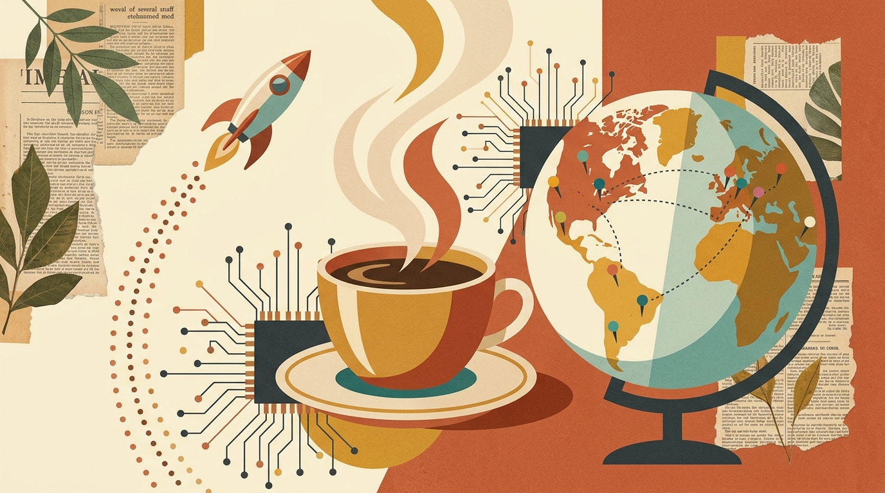

2026年11月26日 · 第330期
每日12:00准时开席
端杯热茶，26分钟聊透今天全球与身边的20件大事小情
不端架子、不念通稿：从白宫新关税和百万颗“太空算力卫星”，到韩国加息、英欧修好，再到国内油价大降和2500万骑手算法协商——大格局落到普通人钱包里，趣闻奇事装进饭后谈资里。
阅读套餐：
本期版面配比看板
精准达标严格执行国际国内 3:1，国际板块中美韩欧 80%、其他地区 20%。
国际 vs 国内 (3:1)
国际15篇 · 国内5篇
国际区域 (8:2)
美4 韩4 欧4 · 他3
26分
预计总耗时
20篇
跨界全收录
4大
深度双维拆解
DEEP DIVE · 深度茶座
点击卡片展开完整家常解读与双维影响分析
今日四大重磅议题：落到普通人身上，撬动世界哪根弦？
ALL-IN-ONE · 包罗万象
全版面 20 篇随心逛
题材：
正在展示全部 20 篇内容（预计 26.0 分钟）
🍵
这会儿没筛出符合条件的新闻
换个地区或关键词试试，或者点下方恢复全版面。
TEA BREAK · 午间茶馆聊聊看
本地互动投票
今天这两个话题，你怎么看？
每日 12:00 编排说明书
- ①20–30 分钟黄金篇幅：本期精选 20 篇、总计约 26 分钟，午饭配茶刚好读完，不刷手机焦虑。
- ②3:1 视野 + 8:2 重点：15 篇国际 + 5 篇国内；国际中美国、韩国、欧洲各 4 篇（占 80%），东南亚、拉美、中东非共 3 篇（占 20%）。
- ③真新闻、有出处：每条资讯均基于 2026 年 11 月官方公报与主流媒体报道，附可点击原文链接，观点与事实分明。
本期收录截止：2026-11-26 12:00